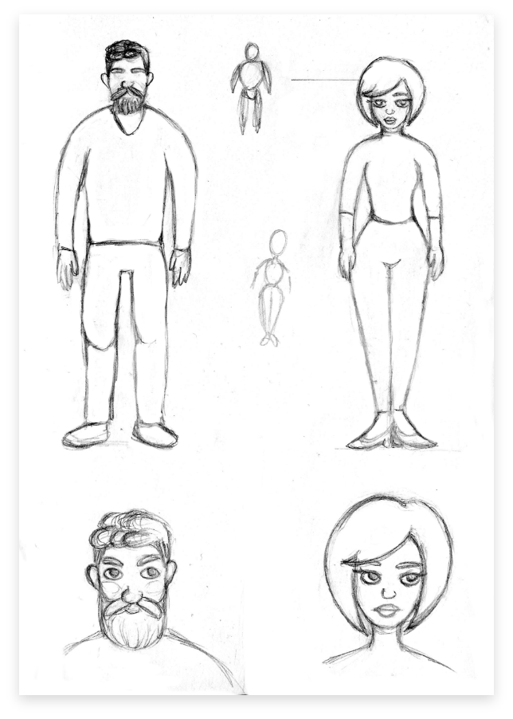

Inhaltliches Konzept
In der Zeit der Digitalisierung sind wir alle mit einander immer vernetzt. Aber wir dürfen nicht über unsere Freunde und Familie vergessen, die im realen Leben mit uns sind.. In diese Animation möchte ich den Kontrast zwischen den beiden Welten darstellen.
